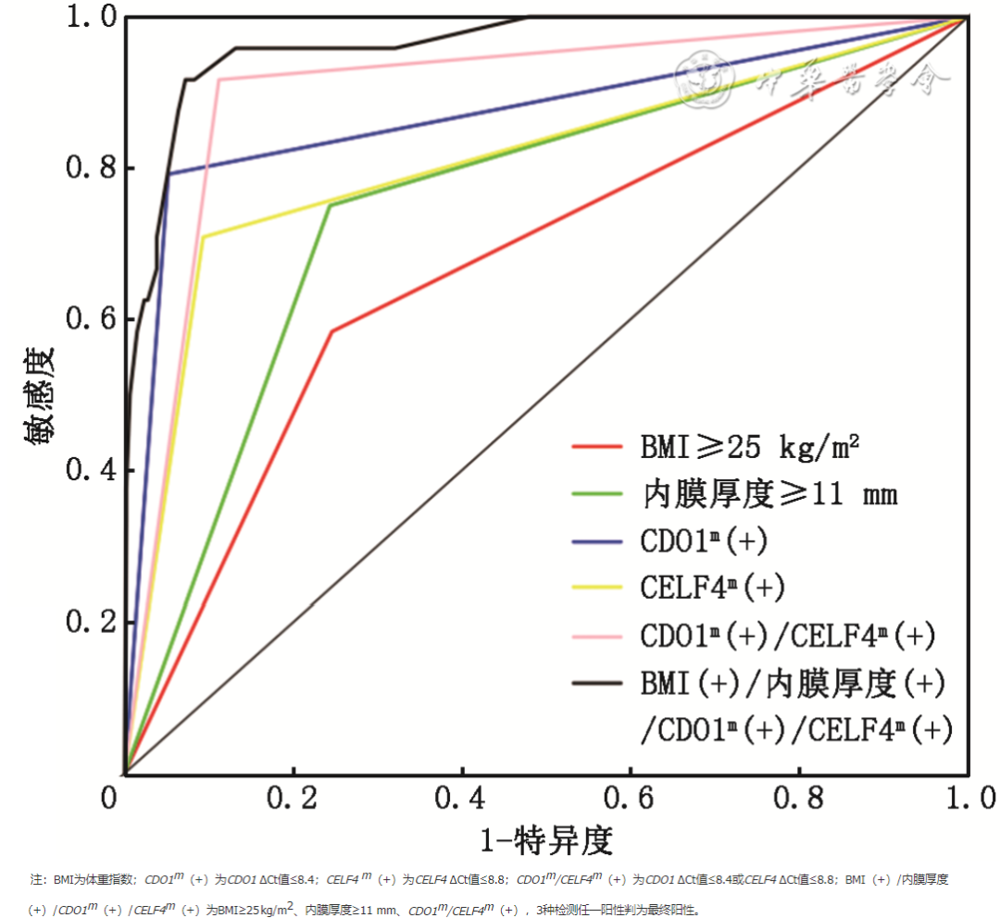

1Background & Objective
- Problem: EC now #2 female genital malignancy in China; childbearing-age AUB needs non-invasive triage.
- Objective: value of CDO1m/CELF4m on cervical cells for EC detection in childbearing-age AUB.
2Study Design & Cohort
517
AUB + hysteroscopy
2021.11–22.10
enrollment
hysteroscopy
gold standard
- Setting: Third Xiangya Hospital gynecology; prospective childbearing-age AUB.
- Assays: cervical cells → cytology · HPV · CDO1m/CELF4m (ΔCt ≤8.4/≤8.8) + TVS ET + CA125/CA199.
- Reference: hysteroscopic histopathology = gold standard.
- OR model: age 1.16 · BMI≥25 4.33 · ET≥11 9.49 · CDO1m 69.62 · CELF4m 23.64 · dual 87.39.
- Comparison: CA125/CA199 · cytology · HPV — not significant between groups.
91.7%
Se · 95%CI 80.6–100
88.8%
Sp · 95%CI 86.0–91.6
0.90
AUC · 95%CI 0.83–0.97
95.8%
TVS+DNA Se
68.0%
TVS+DNA Sp
99.7%
TVS+DNA NPV
- Clinical picture: AUB / abnormal discharge — main symptoms prompting hysteroscopy.
- Marker check: CA125/CA199 did not differ — methylation adds unique signal.
- Inclusion: childbearing-age AUB with hysteroscopy indication; consent.
- Exclusion: pregnancy/lactation · prior treatment · other malignancy.
- Sample: ThinPrep cervical cells pre-op — cytology/HPV/methylation in one sample.
- Limits: single-center; PPV moderate (28.9%) in low-prevalence cohort.
Dual-gene AUC 0.90 (0.83–0.97) — highest among all indicators tested; TVS+DNA Se 95.8%.
3Risk Factors — OR Comparison
- Methylation dominates: dual-gene OR 87.39 (24.83–555.05) — far above ET/BMI.
4Performance Matrix & TVS
91.7%
Se · dual
88.8%
Sp · dual
28.9%
PPV
99.5%
NPV
95.8%
Se · TVS+DNA
68.0%
Sp · TVS+DNA
99.7%
NPV · TVS+DNA
- NPV 99.5%+: negative methylation safely defers hysteroscopy in young women.
- TVS+DNA: Se 95.8% — near-complete EC capture; specificity 68.0%.
5ROC — AUC Ladder

Fig. ROC — dual-gene methylation highest (AUC 0.90) vs single genes, ET & BMI.
- Clear separation: methylation AUC ≫ ultrasound/BMI — best non-invasive discriminator.